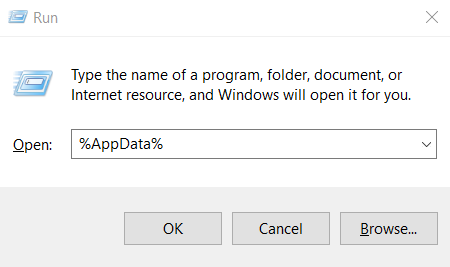
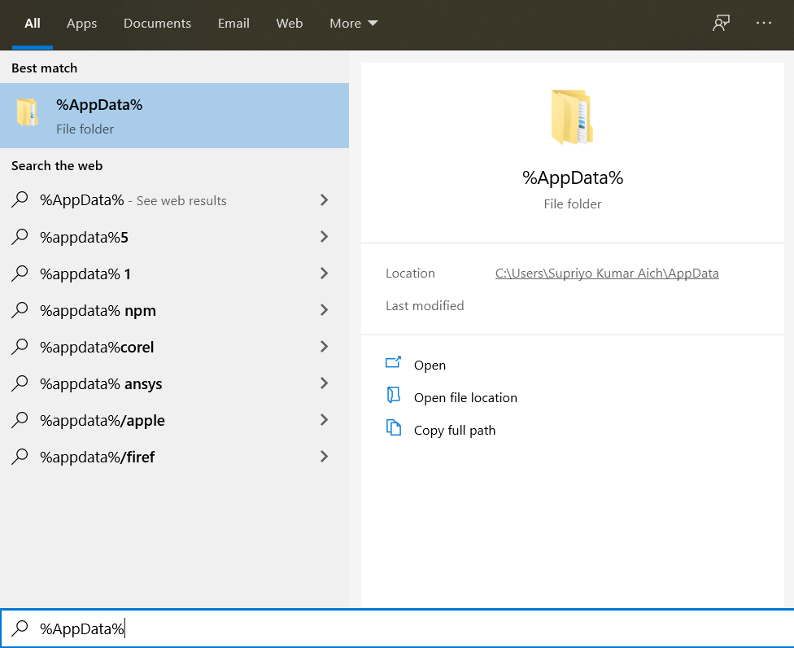
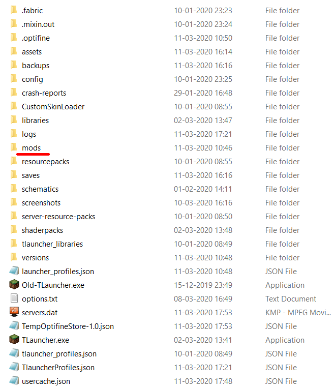

HOW TO INSTALL FABRIC MOD LOADER AND CARPET MODS?
- Download the Fabric Installer
- Close Minecraft if it is already running and then double-click the
fabric-installer.exe - On the Fabric Installer window click Install
- Open minecraft launcher
- Log in with your minecraft account credentials if not already. Then at the game version drop down menu, select the new fabric version (release fabric loader .....) and load game.
- Open Run or open Start menu and type
%AppData%and press enter to search for the location directory. - Then find your
.minecraftfolder and open it. - You should now see a
modsfolder. This is the folder where you will install all your other mods. - Download rest of the
.jarfiles ( given below ) and just drag and drop those files inside your mods folder. - After dragging and dropping your
.jarfiles, restart the game to load the mods.




MODS
| Fabric API | Item Scroller |
| Litematica | Malilib |
| Minihud | Optifabric |
| OptiFine | Quick Carpet |
| Skyblock | Tweakeroo |